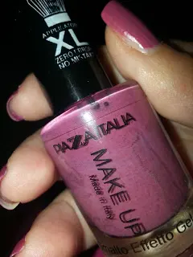
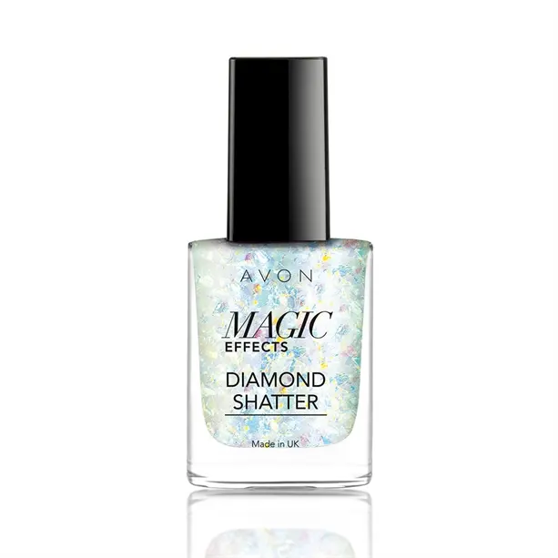
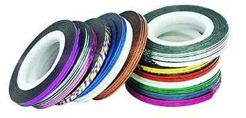
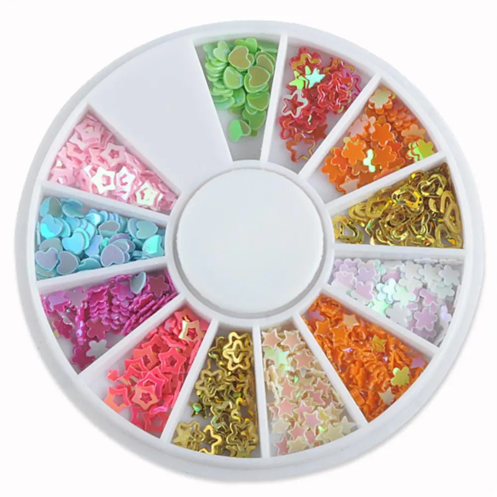
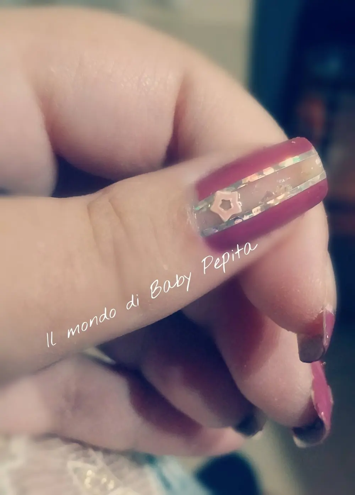
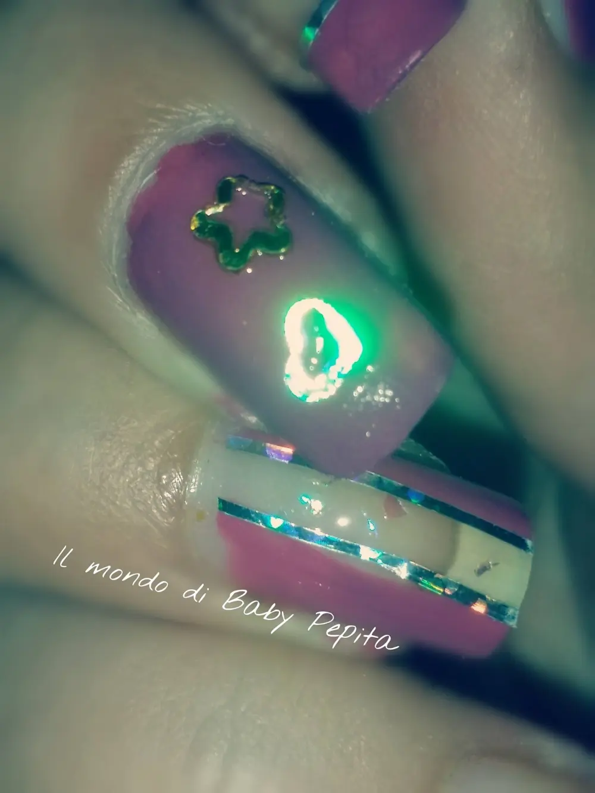
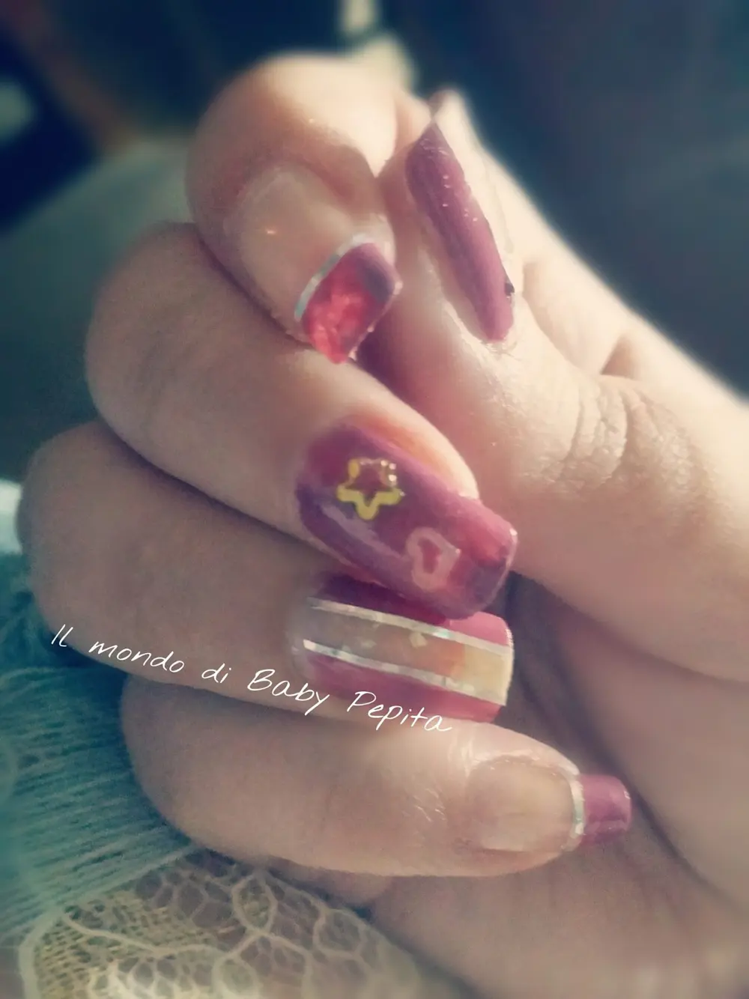
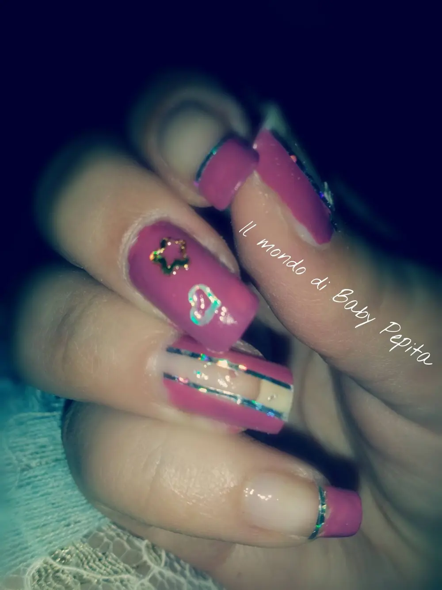

proposta nail art fine marzo
Heilaaaaaaaaa fanciulle. .Finalmente sta uscendo il sole, ed io voglio proporvi una nuova nail art tutta ingioiellata ahahahpartiamo dal fatto che è un colore che va bene sia per l'estate che per l'inverno ed è il Piazza Italia 18smalilla lilla che ve ne ho parlato nell'articolo QUI
Quindi un lilla scuro? vogliamo dire così?
HO USATO:

- smalto AVON "MAGIC EFFECTS" - diamond shatter

- nastrini per la decorazione

- stelline e cuori

Ho voluto fare una cosa diversa, forse un pò più fuori dalle mie corde, ma a volte osiamo ahahsiamo un pò pacchiane su Ho giocato un pò con queste decorazioni e ho fatto un quasi effetto madre perla al centro del pollice e dell'anulare in questo modo

Chiudendo i bordi dello smalto con i nastrini argentati e decorando il tutto con una stellina centrale.Come se non bastasse ho voluto impreziosire anche il medio ahahah

con una colorazione di tutta l'unghia ma decorando con una stellina e un cuoricinolasciando però l'indice e il mignolo con un semplice French

Mi sono divertita dai nel creare qualcosa di alternativo non proprio sobrio ma piùsbarazzino

COSA NE DITE DI QUESTA MIA NUOVA IDEA?PS: VI RICORDO CHE SE SIETE INTERESSATI AI PRODOTTI AVON POTETE TRANQUILLAMENTE RIVOLGERVI A ME ANCHE DA LONTANO.